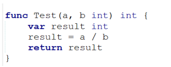

所谓的异常：当GO检测到一个错误时，程序就无法继续执行了，反而出现了一些错误的提示，这就是所谓的"异常"。
所以为了保证程序的健壮性，要对异常的信息进行处理。例如,如下程序，定义一个函数实现整除操作，这个程序对大家来说已经很简单了，实现如下：

但是，大家仔细考虑一下，该方法是否有问题？
如果b的值为0，会出现什么情况？
程序会出现以下的异常信息：
并且整个程序停止运行。
那么出现这种情况，应该怎样进行处理呢？这时就要用到异常处理方法的内容。